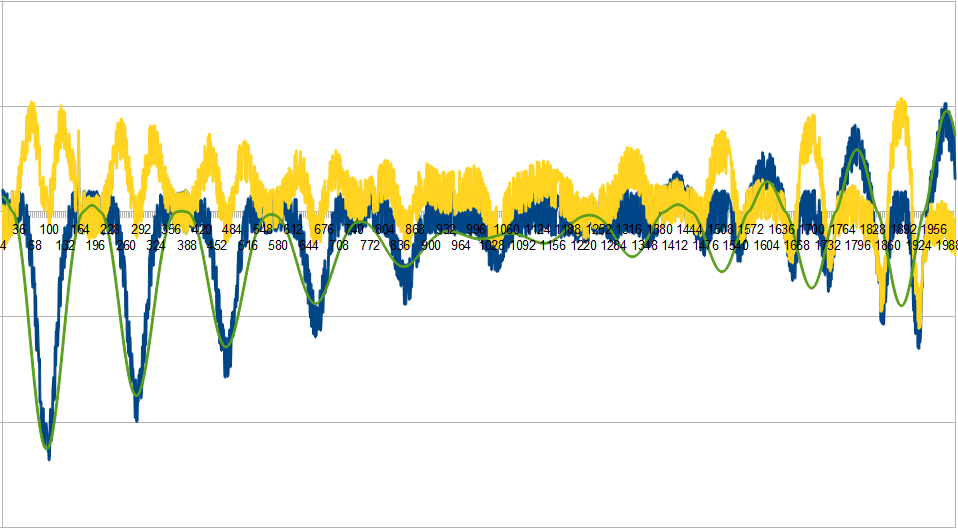
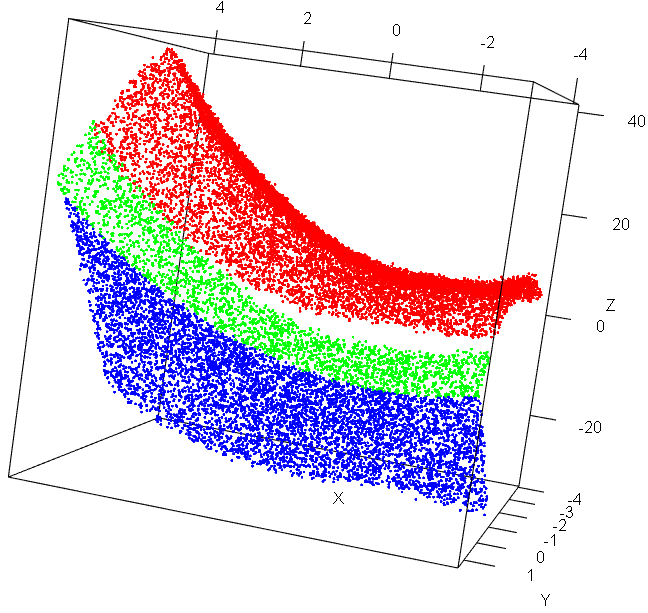
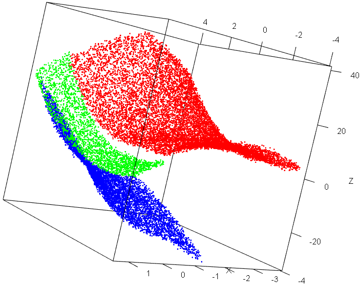
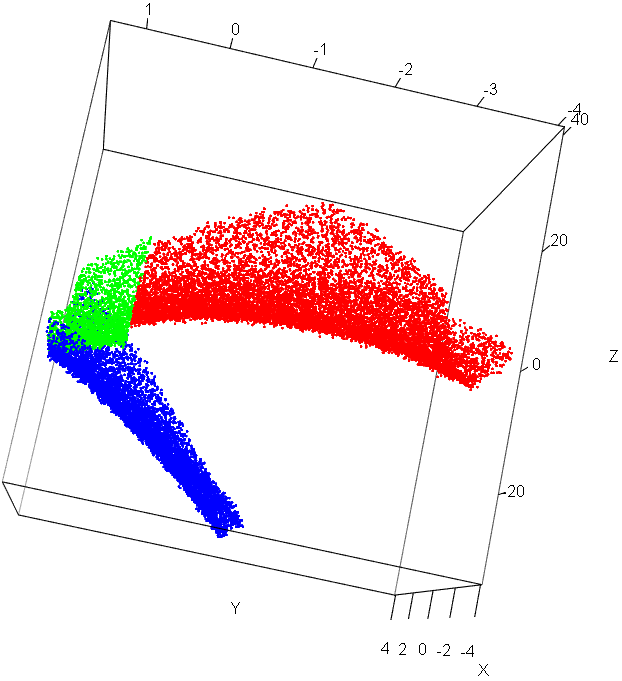

The code for the compressor is available at github. The compressor is composed of smaller compressor programs built specifically for a certain file. A script decides which compressor to use based on which file is to be compressed. The compressor script also writes one byte into the compressed file that tells which program was used to compress the data.
The decompressor is also composed of smalled decompressor programs built specifically for a certain file. The decompressor script first reads the byte that tells which program was used to compress the data, and then passes the rest of the file to the specific decompressor.
The compressors for each dataset are described in the sections below. The descriptions give an overview of the algorithm. For details about the implementation, consult the source code.
The curve dataset contains numbers on some kind of a curve. The ty dataset also contains same kind of data. The same compressor was used for both datasets. Some curvefitting was attempted on the datasets, however the attempts didn't produce anything useful. Figure 1 shows the curve dataset in blue, a curve fitted to it in green and the residuals in yellow. The final compressor compresses the data by storing the difference between two consecutive numbers. The difference is encoded as two bytes, or four bytes for large outliers.

Figure 1: Curve dataset (blue), fitted curve (green) and residual (yellow)
The paleo dataset is a comma separated file with 14 columns. The first column is a species name, replaced with finnish words. The other columns contain numerical values that describe the species. The last four columns are calculated from the earlier columns. The first three calculated columns, ww/dm, ww/wh and uw/dm, are divisions of the earlier columns. The last column, whorl expansion ratio, is calculated by (dm/(dm-ah))2. In most rows, but not all, the values of the four last rows match the calculated values.
The compressor compresses the data cell by cell. There are two modes of compression for each column. For each row, there is also a set of flags that tells which mode of compression is used for each cell.
The first column is compressed with a symbol code for alphabets. The flag tells whether the genus is the same as in the row before it, eg. a row with "pyykki sijainti" followed by a row with "pyykki edus" doesn't compress the second "pyykki". Each alphabet is encoded as 5 bits and the length of the string is encoded with 5 bits.
The second column is compressed as either an empty cell or a 12 bit integer.
The third column is compressed either as a 4 bit integer or an 8 bit integer.
Columns 4 to 7 are compressed either as a byte, or with a symbol code for numbers. Each digit or comma is compressed as 3 or 4 bits, and the length of the string is compressed with 3 or 4 bits.
Column 8 is compressed either as a 0 or with the symbol code for numbers.
Column 9 is compressed either as a 4 bit or a 6 bit integer.
For column 10, the flag tells whether it's the same as the third column. Otherwise it is compressed with the symbol code for numbers.
For columns 11 to 14, the flag tells whether the cell is equal to the value calculated from the earlier columns. If it is not, the cell is compressed with the symbol code for numbers.
There is also an alternate compressor for the paleo dataset. The alternate compressor splits the csv file's columns into their own files, which are then compressed using general purpose compressor such as bzip2. This compresses the file to about 78 kilobytes, 5 kilobytes less than the other implementation. However, due to lack of time the alternate implementation could not be integrated into the compressor. The alternate implementation is available here.
The caravan dataset is a set of rows, with variables that describe a person and their decision of either buying insurance or not. The caravan dataset is compressed with bzip2 because the compression ratio for bzip2 was better than the custom solution to it. However, an attempt was made at using a bayesian network for compressing the dataset.
Bayes network compressor
A bayesian network defines a probability distribution over the values in each row. The rows can then be compressed using arithmetic encoding. Because of performance reasons, the compressor actually encodes the data column by column instead of row by row. However, this doesn't change the output. Finally, the network itself is also encoded.
The bayesian network is built by first defining an undirected graph over the nodes, and an ordering of the nodes. A node's parents are those that are adjacent to it in the undirected graph and before it in the ordering. The node's parameters are calculated directly from the data.
Four different networks were tried. First, the default network is a handcrafted network, with links between variables that should be connected according to common sense, and an ordering that is also defined by common sense ideas of cause and effect. The second network is a maximum entropy network where none of the nodes are connected with each others. This network is in practice equivalent to using arithmetic compression to compress the columns. The third network, called minimal knowledge network, uses knowledge of the customer's type to predict every other variable, and knowledge of the number of insurances to predict insurance contributions. The last network, called selective network, was built by looking at the entropies and mutual informations of the variables in the data.
The selective network's undirected graph was found by calculating the entropies of each node in the dataset, and then defining a "relatedness coefficient" as C = I(X, Y)/min(E(X), E(Y)). The relatedness coefficient is 0 when the mutual information between two variables is zero, and 1 when the mutual information is highest, that is, equal to the entropy of the variable with less entropy. Essentially, the relatedness coefficient tells how much knowing one variable helps you predict the other. A relatedness coefficient of 1 means that the lower entropy variable can be predicted perfectly when the higher entropy variable's value is known. The undirected graph was defined by taking the 40 pairs with the highest relatedness coefficient. Using more pairs was tried but it didn't improve the compression enough to offset the increased size of the network.
The default network compressed the data to about 37 kilobytes. However, the network itself took over 200 kilobytes to encode. All of the minimal knowledge network, maximum entropy network and selective network achieved compression sizes of between 80 and 90 kilobytes for the data and the network. This was still worse than bzip2 so the bayesian network compressor was not used.
Bzip2 algorithm
Bzip2 utilise several compression techniques in an order, which can be illustrated as follows
Data->(Run-length encoding(RLE)->Burrows-Wheeler transform(BWT)->Move to Front(MTF)->Run-length encoding->Huffman coding->Optional Multiple Huffman tables and Unary base 1 encoding->Delta encoding-> Sparse bit array)->Encapsulation->Compressed Data
In the first step: Bzip2 use RLE technique for encoding sequences of 4-255 repetitive symbols into four of the repetitive symbols with a marker of repeated times for the rest of the symbol sequences. For example, "00000000000006110000111" will be encoded as "0000\96110000\0111". Some redundant symbols are replaced by a marker in the process.
In the second step, Burrows-Wheeler transformation will list all rotations of a block of symbols, sort the list into lexicographical orders, then take the last column as the output. For example: &121231234* will be turned into &23111223*4, as the illustration below.
| All Rotations | Sorting and take last column |
|
&121231234* *&121231234 4*&12123123 34*&1212312 234*&121231 1234*&12123 31234*&1212 231234*&121 1231234*&12 21231234*&1 121231234*& |
121231234*& 1231234*&12 1234*&12123 21231234*&1 231234*&121 234*&121231 31234*&1212 34*&1212312 4*&12123123 &121231234* *&121231234 |
The effect of BWT is move repetitive symbols together. In the example all "1" are list in a consecutive sequence.
In the third step, the MTF algorithm will record a sequence of symbols as their position in a list of alphabets. After each recording, the recorded symbol will be moved to the first ("0") position of the alphabet.
For example:
| Iteration | positons | alphabet |
|
deeed deeed deeed deeed deeed |
3 3,4 3,4,0 3,4,0,0 3,4,0,0,1 |
abcde dabce edabc edabc deabe |
The output alphabet and symbol position can be used for decoding with a reversed process. The benefit of using MTF is to record a long sequence of repetitive symbols as a sequence of zeros.
In the fourth, the Bzip2 will run RLE again but in this RLE process, the sequence of zeros generated by previous step will be replace by special symbol "RUNA" and "RUNB". Compare with RLE in step 1, RLE in this step can encode repetition of arbitrary length with out 255 upper limits.
The fifth step is Huffman coding.
If multiple Huffman tables are needed, the algorithm can generate up to six Huffman tables. Later in the seventh step, a unary code of 1-6 bits will be used for representing which table to use.
In the eighth step, Bzip2 will use Delta coding to reconstruct Huffman table, such that several similar Huffman tables will be encoded using code differences result in short overall code length for encoding the table.
Finally, in the ninth step, Bzip2 decides which symbols should be mapped to symbol codes of Huffman tables using a sparse method.
After these steps, Bzip2 will encapsulate processed data into Bzip2 data stream. Decompression follows a procedure of steps in a reversed order, and in each steps, reversed processes will restore the compressed data gradually to its original form.
The final dataset is a set of points in 3d space. The data to be compressed is the z-value of a point, and the x and y values are given in the side data. The data can be roughly divided into three saddle-shaped patches. Figures 2, 3 and 4 show the data from different angles. The datapoints are divided into red, green and blue patches.

Figure 2: Final dataset

Figure 3: Final dataset

Figure 4: Final dataset
A bezier patch was used to predict the z-value of each point. The data was divided into the patches, and a bezier patch was fitted on each data patch. Bezier patches with 3x3 and 4x4 grids were tried, and using the larger grid did not seem to improve the prediction. Using a Bezier patch for each patch in the dataset was also compared with using one patch to predict both the red and green patches. The prediction was slightly more accurate with three patches, however not enough to make the compression better. The final solution was to use two 3x3 patches, one for both red and green, and one for blue. A bit for each point tells which patch it belongs to. Then, the difference between the point's z-value and the predicted z-value is encoded as a 12 bit integer and a sign bit.
Since all of the penalty/reward datas looked like random bytes, the compressor doesn't even try to compress them. The stock.dat file was an attempt at fooling the other teams into wasting time trying to compress it. The file is actually generated by a random walk, however some trickery was used to make the compressed file look bigger than one byte. The program that generates the data was actually stored into the compressed file, and the decompressor compiles and runs that file. However, the file itself was so small that it doesn't make much sense for the other teams to spend too much time with the file even if they think it can be compressed.
Contribution history is visible at the github page's commit history. Mikko wrote all the compressors used in the final delivery, compressor scripts, prepared the tars for delivery and wrote the report except for the bzip2 explanation. Luo contributed the bzip2 explanation and the alternate paleo compressor.